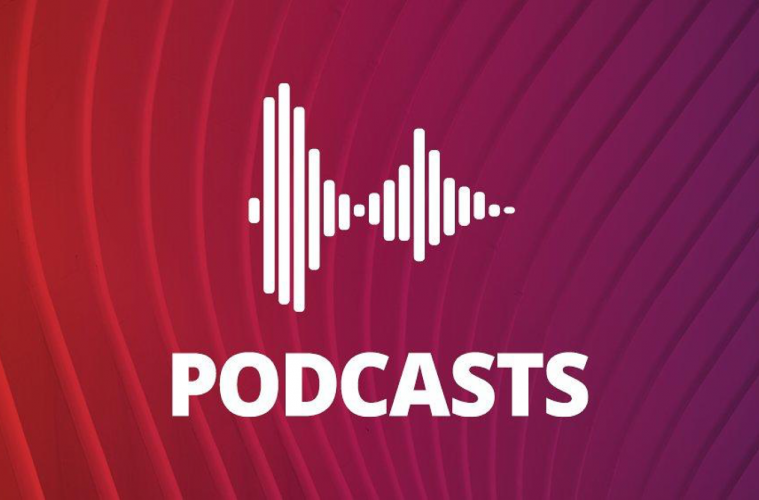
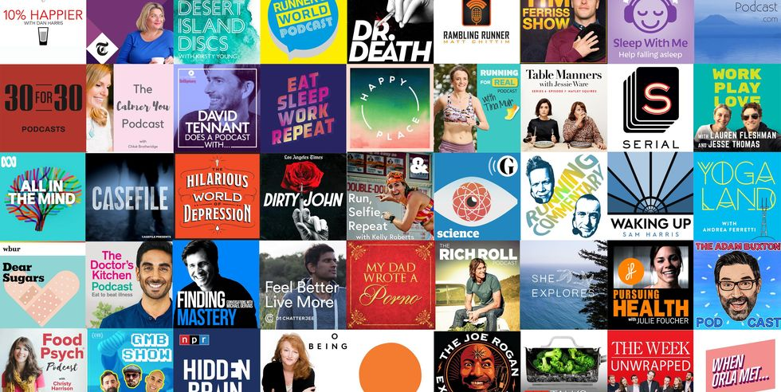
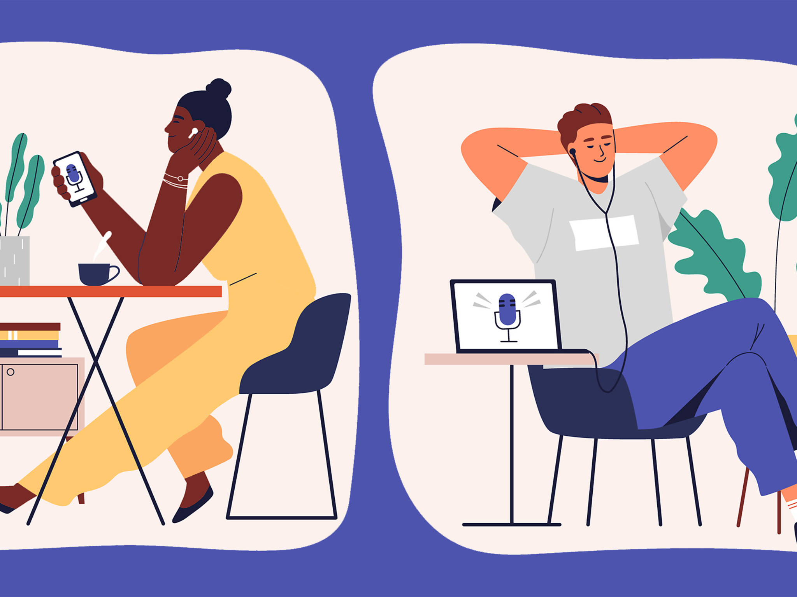

A podcast is an episodic series of spoken word digital audio files that a user can download to a personal
device for easy listening. Streaming applications and podcasting services provide a convenient and
integrated way to manage a personal consumption queue across many podcast sources and playback devices.
A podcast series usually features one or more recurring hosts engaged in a discussion about a particular
topic or current event. Discussion and content within a podcast can range from carefully scripted to completely
improvised. Podcasts combine elaborate and artistic sound production with thematic concerns ranging from
scientific research to slice-of-life journalism. Many podcast series provide an associated website
with links and show notes, guest biographies, transcripts, additional resources, commentary,
and even a community forum dedicated to discussing the show's content.

The cost to the consumer is low. While many podcasts are free to download,
some are underwritten by corporations or sponsored, with the inclusion of commercial advertisements.
In other cases, a podcast could also be a business venture supported by some combination of a paid
subscription model, advertising or product delivered after sale.
People are motivated to create a podcast for a number of reasons.

The podcast producer, who is often the podcast host as well, may wish to express a personal passion,
increase professional visibility, enter into a social network of influencers or influential ideas,
cultivate a community of like-minded viewership, or put forward pedagogical or ideological ideas
(possibly under philanthropic support).